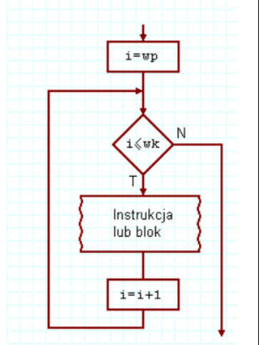
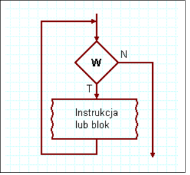
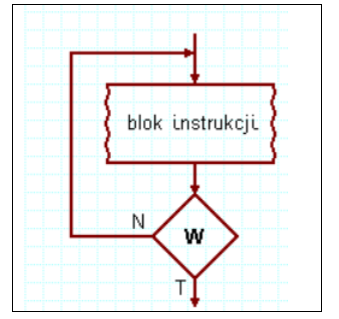

<textarea>
    <!DOCTYPE html>
<html lang="pl">
<head>
    <meta charset="UTF-8">
    <title>Zadanie 41</title>     
    <style>
        body { font-family: Arial, sans-serif; margin: 20px; }
        .container { max-width: 800px; margin: auto; }
        .loop-section { border: 1px solid #ddd; padding: 15px; margin: 10px 0; border-radius: 5px; }
        .loop-section h2 { color: black; }
        img { max-width: 100%; height: auto; }
        .button-container { text-align: center; margin-top: 20px; }
        .button { background-color: black; color: white; padding: 10px 20px; text-decoration: none; border-radius: 5px; }
    </style>
</head>
<body>
    <div class="container">
        <h1>Pętle w programowaniu</h1>

        <div class="loop-section">
            <h2>Pętla for</h2>
            <p><strong>Konstrukcja:</strong></p>
            <pre>for (inicjalizacja; warunek; inkrementacja) { 
    // kod do wykonania
}</pre>
            <p><strong>Opis:</strong> Pętla for jest używana, gdy znamy liczbę iteracji. Składa się z trzech elementów: inicjalizacji, warunku oraz inkrementacji.</p>
            <p><strong>Schemat blokowy:</strong></p>
            
        </div>

        <div class="loop-section">
            <h2>Pętla while (kontrolowane wejście)</h2>
            <p><strong>Konstrukcja:</strong></p>
            <pre>while (warunek) {
    // kod do wykonania
}</pre>
            <p><strong>Opis:</strong> Pętla while działa dopóki warunek logiczny jest spełniony. Sprawdza warunek przed każdą iteracją.</p>
            <p><strong>Schemat blokowy:</strong></p>
            
        </div>

        <div class="loop-section">
            <h2>Pętla do while (kontrolowane wyjście)</h2>
            <p><strong>Konstrukcja:</strong></p>
            <pre>do {
    // kod do wykonania
} while (warunek);</pre>
            <p><strong>Opis:</strong> Pętla do while wykonuje się przynajmniej raz, ponieważ warunek jest sprawdzany dopiero po pierwszym wykonaniu kodu.</p>
            <p><strong>Schemat blokowy:</strong></p>
            
        </div>
    </div>
</body>
</html>

</textarea>